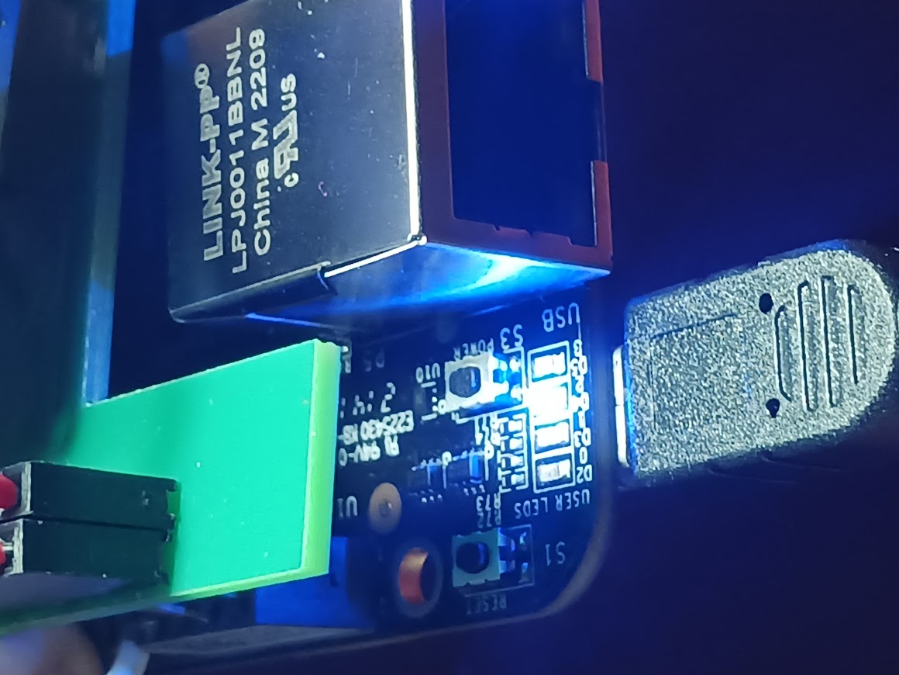

Embedded MIL-STD-1553 Project
In this project, an embedded system was developed to function as a MIL-STD-1553 Bus Monitor and Remote Terminal. This was achieved by controlling a HI-1575 transceiver chip using C-language firmware.

Design
The design phase involved sketching out the architecture of the embedded system, focusing on how the various components would interact. Particularly important was the interface between the microcontroller and the HI-1575 transceiver chip.

Firmware Development
With the system design in place, firmware was developed in C to control the HI-1575 chip. The firmware was responsible for interpreting incoming messages, performing necessary actions, and generating responses.

Testing and Verification
The final stage was testing and verification. Here, the embedded system was connected to a MIL-STD-1553 bus and its performance as a bus monitor and remote terminal was assessed. The successful performance confirmed the correctness of the design and implementation.
